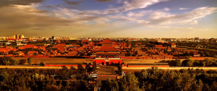

| 北京 | |||||
|---|---|---|---|---|---|
| 首页 | 历史沿革 | 地理环境 | 交通运输 | 风景名胜 | 历史文化 |
| 历史文化 | |||||
建筑文化 北京在历史上曾为六朝都城，在从燕国起的2000多年里，建造了许多宫廷建筑，使北京成为中国拥有帝王宫殿、园林、庙坛和陵墓数量最多的城市。 2021年12月19日，北京市文物局发布消息称，在北京房山琉璃河遗址，2021年最新发掘的一座西周墓葬中出土了青铜卣。据介绍，青铜卣上的铭文出现太保墉燕燕侯宫等内容。有关专家认为，铭文中的墉字，是筑城之意，证实周王重臣召公亲自来过琉璃河遗址，并在此筑都。这篇铭文以文字资料实证了三千余年的北京建城史，在世界城市史研究上具有独特价值。 皇家建筑 北京故宫
北京故宫，明朝时叫大内宫城，清朝时叫紫禁城，这里原为明、清两代的皇宫，住过24个皇帝，建筑宏伟壮观，体现了中国传统的古典风格和东方格调，是中国乃至全世界现存最大的宫殿，是中华民族宝贵的文化遗产。天坛以其布局合理、构筑精妙而扬名中外，是明、清两代皇帝祭天的地方。 传统民居 主词条：北京四合院 北京四合院
四合院是以正房、倒座房、东西厢房围绕中间庭院形成平面布局的北方传统住宅的统称。北京四合院源于元代院落式民居，是老北京城最主要的民居建筑。 宗教建筑 王府井天主堂
北京现存著名的有：佛教的法源寺、潭柘寺、戒台寺、云居寺、八大处等。道教的白云观等。伊斯兰教的北京牛街礼拜寺等。藏传佛教（喇嘛教）的雍和宫等，天主教的西什库教堂、王府井天主堂等。基督教的北京基督教会缸瓦市堂、北京基督教会崇文门堂等。 中轴线建筑 主词条：北京中轴线 北京中轴线是指元、明、清时的北京城的中轴线，北京的城市规划具有以宫城为中心左右对称的特点。北京的中轴线南起永定门，北至钟鼓楼，长约7.8千米。从南往北依次为：永定门，前门箭楼，正阳门，中华门，天安门，端门，午门，紫禁城，神武门，景山，地安门，后门桥，鼓楼和钟楼。从这条中轴线的南端永定门起，就有天坛、先农坛；太庙、社稷坛；东华门、西华门；安定门，德胜门以中轴线为轴对称分布。中国著名建筑大师梁思成先生曾经说北京的独有的壮美秩序就由这条中轴线的建立而产生。永定门、中华门、地安门都在中华人民共和国成立后被拆毁，后重新修建了永定门城楼。 城池 主词条：北京城池 北京非物质文化遗产
北京城池是中国历史上最后两代王朝明和清的都城城防建筑的总称，由宫城、皇城、内城、外城组成，包括城墙、城门、瓮城、角楼、敌台、护城河等多道设施，曾经是中国存世最完整的古代城市防御体系。北京城门是明清北京城各城门的总称。根据等级以及建筑规格的差异，分为宫城城门、皇城城门、内城城门、外城城门四类。明清北京城有宫城城门四座（一称六座）。 饮食文化
京味小吃的代表有豆汁、豆面酥糖、酸梅汤、茶汤、小窝头、茯苓饼、果脯蜜饯、冰糖葫芦、艾窝窝、豌豆黄、驴打滚、灌肠、爆肚、炒肝等。 糖葫芦
|
|||||